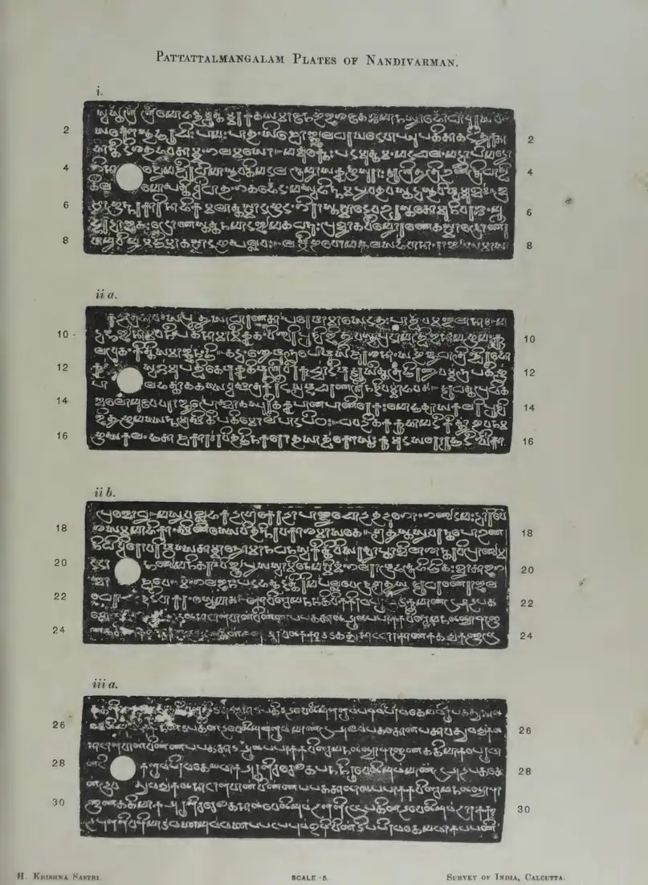
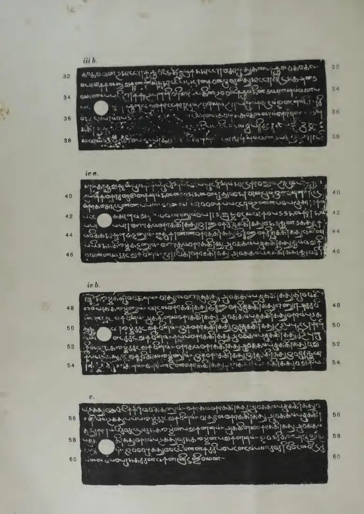

Pattattalmangalam grant of Nandivarman
No. 14.—PATTATTALMANGALAM GRANT OF NANDIVARMAN.
In October 1922, when I was in charge of the office of the Assistant Archaeological Superintendent for Epigraphy, Madras, Mr. P. V. Jagadisa Aiyar obtained the following set of copper-plates from Mr. Rm. St. Sivananda Pillai of Kumbakōṇam and sent it to me for examination. As I had soon after to go away to Ootacamund, I left the plates to be noticed by Mr. Venkoba Rao in the Annual Report on Epigraphy for 1922-23. The set is marked as No. 5 Appendix A in the Report for that year and finds a short notice in Part II which will be referred to in the sequel. I edit the inscription on the plates with the help of one set of impressions kindly placed at my disposal by M. R. Ry. Rao Bahadur H. Krishna Sastri. Recently an article entitled “ the Kotranguđi plates of Nandivarman II ” has appeared in the Mythic Society Journal, Vol. XIV, pp. 125 to 129, under the editorship of Mr. T. N. Subramaniam. There the discovery of the plates has been described in detail.
The set consists of five plates of which the first and last are engraved only on their inner sides. They were originally strung together on a ring bearing a massive seal, 3 inches in diameter. The emblems and legend on the seal are so badly obliterated that they cannot be made out. A couchant bull is all that could be faintly seen. The ring had been cut when the plates reached me and it is not known when and by whom it was cut. The plates measure nearly 10” by 3½” and the ring-hole, bored at the left margin, is ¾” in diameter. The five plates with the ring and seal weigh 320 tolas and the plates alone weigh 175 tolas.
The inscription on the plates is neatly executed and is in good preservation. The only places where some damage is done to letters are at the commencement of lines 7 and 8 of IIb, lines 1 and 2 of IIIa, lines 5 and 6 of IIIb and line 8 of IVb. It has been found possible to restore with certainty all the damaged portions except that in line 1 of IIIa. The reading of the damaged portion in line 6 of IIIb is tentative. As is usual with most of the copper-plate charters of South India, this inscription consists of two parts of which the first is in Sanskrit poetry (eleven verses in all) written in Grantha characters and runs from line 1 to line 22, where the second part in Tamil prose commences and runs to the end i.e., line 60. The few Grantha letters and words employed in the Tamil portion are sāmā, sarve-parihāram and brahmadē (l. 37), hāram (l. 38), brahmadē (l. 42), gauta (ll. 43 and 45), nyr and kra (l. 43), bhatta (ll. 44 and 45), jatva (l. 44), Hiraṇya (ll. 44 and 48), Agniśarmma and gōtra (l. 47), dē (l. 48), śarmma (ll. 45, 53, 56, 57, and 58) and śri-Danđi (l. 60).
A few alphabetical peculiarities deserve notice:—The symbol for secondary (long) is a concave curve with a commencing loop engraved on the top of the consonant, while in the case of i (short), this loop is absent. The three letters mu, pu and lu are almost similar in shape, but can be well distinguished on close examination: while the u symbol of mu is written immediately below the horizontal line, it is engraved at the end of a vertical downward stroke drawn from the right end of the horizontal in the case of pū. Though lu is formed like pu, it is distinguished by having a small indenture at the right end of the horizontal stroke. Two forms of ya occur of which one is a semi-circle with two upward arms on the right side, while the other is a simple loop twice wound round. The shape of va is almost that of a triangle with its base at bottom. La has not got the usual convex curve on the right side; it has only an angle. The rēpha is invariably marked in this epigraph and in most cases the pulli also. The Tamil sandhī rules have to account for the change of l into r in pērār-brahma (l. 42). But it may be pointed out that the same change noticed in the word viṇṇappattār occurring before Ālappākka (l. 27), in valīyār occurring before maṇai (l. 31) and in Mayilāppir before Nandi
(l. 44 f.) is unusual and against the rules of grammar. Among the gōtra names, Jatvakaraṇṇa (l. 44) and Koṇđina (l. 54) stand for Jātūkarṇa and Kauṇđinya respectively.
After an invocation to Vishṇu (v. 1) and the primeval cause of the Universe (v. 2), the mythical genealogy of the Pallavas is given in verse 3 which states that from the lotus-navel of Narakāri (i.e., Vishṇu) came Brahmā; from him came Angiras; from him Dēvaguru (i.e., Brīhaspati); from him the renowned sage Śanīyu; from his son Bharadvāja was born Drōṇa of established skill in handling the bow in battles; from him Drauṇi (i.e., Aśvatthāman) of unsurpassed valour; and from him Pallava. Prosperity and Earth rested with the Pallavas to the exclusion of other kings (v. 4) and the sovereigns of this family obtained glory by conquering all enemies (v. 5). In the line of kings counting from Vīrakūrcha and others who had obtained svarga, there was king Hiraṇyavarman; and then came Nandivarman (v. 6). He was a powerful monarch and it is stated of him that he came to rule the kingdom while he was very young: and conquering all enemies, he had his foot-stool adorned with the crowns of the lords of earth who bowed before him (v. 7). The darkness of the world was removed by the splendour of his fame (v. 8). Waiting to get entrance, it is said, there were at his gate the Vallabha, Kaĵabhra, Kēraĵa, Pāṇdya, Chōĵa, Tuĵu, Goṇgaṇa (Koṇkaṇa) and others (v. 9). Verse 10 gives out that the chief officer of his, who was ruling the province of Maṅgala-rāshtra and who was a great hero, virtuous and respected by the good, having petitioned the king, gave (a brahmadēya) to a number of Brāhmaṇas. The Tamiĵ portion records that at the request (viṇṇappam) of Maṅgalanādāĵvāṇ and at the īṇatti of Ālappākka-Vijaiyanallūĵān, king Vijaya-Nandivikramavarman issued an order in the 61st year of his reign to the nāṭṭār of Teṇkarai-Ārvalakūṛram in Śōĵa-nāḍu granting as brahmadēya 40 vēlis of land, which included an old brahmadēya of 24 vēlis, another brahmadēya of 12 vēlis granted in the 59th year of the same king's reign at the request of Maṅgalanādāĵvāṇ and the āṇatti of Ālappākka-Vijaiyanallūĵān and the remaining 4 ve'is now assigned. The nāṭṭār made obeisance to the order, received it on their heads, circumambulated the granted land and planting boundary stones and milk bush, issued their order freeing every kind of land in this grant portion from all the rights of the king—which are here specified—and constituted it as a new village under the name of Paṭṭattālmaṇgalam. The names of the donees are then mentioned (see table below). The inscription was engraved by a certain Śrī-Daṇḍi son of Vidēlviḍugu-Pallava-perundachchaṇ of Aimpaṇaichchēri (Aimbuṇaichchēri) in Kachchippēḍu.
There were more kings than one of the name Nandivarman or Vijaya-Nandivikramavarman in the Pallava family. The earliest of them is he who issued the Udayēndiram copper-plate grant1 wherein he is stated to be the son of Skandavarman, grandson of Simhavarman and great-grandson of Skandavarman. The Vēlūrpālaiyam plates which say that Simhavishṇu was the son of Simhavarman and grandson of Nandivarman2, seem to refer to this Nandivarman. The second sovereign of the Pallava family who bore the name Nandivarman was the son of Hiraṇyavarman and a lineal descendant of Bhīma, the younger brother of Simhavishṇu.3 He bore the surnames Kshatriyamalla, Pallavamalla and Vidēlviḍugu4. The third of the name was the grandson of this Nandivarman Pallavamalla5 and it was during his reign that the Vēlūrpālaiyam plates were issued
The first question to determine is to which of the three Nandivarmans we should ascribe the present inscription. Mr. Venkoba Rao in noticing this inscription in his report for 1922-23
1 Ep. Ind., Vol. III, p. 145.
2 South-Ind. Inscrs., Vol. II, p. 508, vv. 9 and 10. The exact relationship between Simhavarman and Nandivarman is not mentioned.
3 Ibid. p. 350, vv. 28-30.
4 Ibid. p. 350, line 78.
5 Ibid. p. 511, vv. 16-19.
states that it must belong to the reign of Nandivarman III. I consider this conclusion of his to be quite untenable. I would at the outset point out that the Taṇdantōṭtam plates which are supposed to have been issued in the reign of Nandivarman III should correctly be attributed to his grandfather Nandivarman II Pallavamalla. According to the Taṇdantōṭtam plates the king bore the surname Êkadhīra1 and this was the surname of Nandivarman Pallavamalla as is clear from the fact that the grant made in the Kāśākuḍi plates was constituted into a new village under the name Êkadhīramaṅgalam2 which should have been so termed after the king's surname Êkadhīra. The second point to note is that the Nandivarman of our plates was the successor of Hiraṇyavarman as was the Nandivarman of the Kāśākuḍi and the Taṇdantōṭtam plates. The third ground, which is much stronger than all, is furnished in the Vaikuṇṭha-Perumāl temple inscriptions3 explaining the sculptures representing the events that took place immediately after the death of Paramēśvaravarman II leading to the accession of Nandivarman Pallavamalla. It says:—
After the death of Paramēśvaravarman II, a deputation consisting of the Mātras, the Mūlaprakṛitis and the ghaṭakayar waited on Hiraṇyavarma-Mahārāja and represented the fact that the country was without a ruler and requested him to grant them a sovereign. Thereupon king. Hiraṇyavarman sent for the chief potentates (kulamallar) and enquired which among them would accept the sovereignty. All of them refusing, he asked his sons Śrīmalla, Raṇamalla, Saṅgrāmamalla and Pallavamalla. Pallavamalla humbly offered to go, but king Hiraṇyavarman was at first unwilling to risk his son, who was then only twelve years of age, in such a perilous undertaking. But Hiraṇyavarman was soon persuaded by Daraṇikoṇdapōśar to give his consent. Receiving the weapons presented to him both by his father and Daraṇikoṇdapōśar, Pallavamalla proceeded to Kāñchipuram, crossing on his way several hills, rivers and forests. Hearing of his approach a certain Pallavadi-Araiyar came with a large force, and placed him on an elephant's back and returned to the city where he was received by the feudatory chiefs, the members of the merchants' guild, the mūlaprakṛitis, and Kāḍakka-Muttaraiyar. He was then crowned king under the name Nandivarman and with the insignia of Vidēlviḍugu, Samudraghōsha, Khaṭvāṅga-dhvaja and Vṛishabha-lāñchhana by the ministers, the feudatories, the ghaṭakayar and the ubhaiya-gaṇa.
The above facts show that Nandivarman Pallavamalla's accession to the throne took place without any bloodshed, the whole country being instrumental in getting him as their sovereign. This fact does also find expression in the Kāśākuḍi plates which state that he was chosen by the subjects.4 The statement that Nandivarman was quite young (i.e., 12 years of age according to the Vaikuṇṭha-Perumāl temple inscription) when he became the ruler of the Pallava dominions is correctly reflected in the present grant which states of him आधत्त प्रथिबली युवेव राज्यं. A further point in favour of our view is that Nandivarman Pallavamalla bore the surname
1 South-Ind. Inscrns., Vol. II, p. 520, v. 4 and p. 529, note 4,
2 Ibid. p. 359.
3 Ibid (Texts), Vol. IV, G1 No. 135, pp. 10 ff.
4 South-Ind. Inscrns., Vol. II, p. 357, v. 27.
Vidēlvidugu as stated already, and it is after this title that the father of the engraver of the grant must have been called Vidēlvidugu-Pallava-perundachchan.1
It is noteworthy that the ājāapti of our inscription, viz., Ālappākka (Ālambākka) Vijaiyanallūjān figures in an inscription of Pallavatilaka-Nandivarman found at Tiruveļļarai in the Trichinopoly district.2 This chief's younger brother, Kamban Araiyan by name, figures as the constructor of a big well in the same place as recorded in an inscription of Pallavatilaka-Dantivarman.3 It is now beyond question from the present grant that these kings Pallavatilaka-Nandivarman and Pallavatilaka-Dantivarman, in whose inscriptions figure the two brothers Vijayanallūlān and Kamban Araiyan as donors, are identical with Nandivarman Pallavamalla and his son and successor Dantivarman. Thus it becomes clear that the term Pallavatilaka was not the surname of any particular king of the Pallava line which was later on adopted as a title by his successors. In editing the Tiruveļļarai well inscription4 I was inclined to follow the late Mr. Venkayya in considering the successors of Dantivarman as belonging to the family of Pallavatilaka, that being almost the special designation then known to be of Dantivarman as indicated in the Triplicane inscription of that king.5 The present grant shows that charter-writers did not mean any distinction between Pallavakula and Pallavatilakakula. Therefore, in case we meet with inscriptions of Nandivarman or Dantivarman with the word Pallavatilaka or Pallavatilakakula prefixed to their names, we have to distinguish the king from those who bore similar names, by other evidences than what is furnished by the mere title Pallavatilaka. In this connection, it may be pointed out that Ađigaļ Gandan Mārambāvai, who figures as donor in a record of the early Chōļa king Rājakēsarivarman (Āditya I) and who is stated to be the queen of Pallavatilaka-Nandivarman6, cannot be the queen of Pallavamalla, for Āditya I and Pallavamalla are sepa ated by over. a century: in all probability she must have been the queen of Pal'avamalla's g andson Nandivarman III.
As has been noted, the present inscription is dated in the 61st year of the king's reign. In my Historical Sketches7, I gave my consideration to the question whether or not Nandivarman Pallavamalla could have reigned for a long time, usurper as he was then known to be, and taking on'y into view the several conquests he effected and the time of rule of his contemporaries, I arrived at the conclusion that he should be credited with a long period of rule. This conclusion is now made certain by a study of the Vaikuntha-Perumāl label epigraphs and the present copper-plate grant according to both of which the prince was quite young i.e. 12 years of age, when he became king and by the fact of the present inscription being dated in the 61st year. The latest regnal year, however, of Pallavamalla is the 65th which is furnished in a Mahābalipuram inscription recently discovered by me in the courtyard of the Varāha-Perumāl cave.8 If this be the last year of his rule, the king shou'd have lived up to his 77th year of age.
1 It may be noted that the titles Perumbiđugu, Vidēlvidugu and Mārapiđugu which had been assumed by the feudatory chiefs of the Muttaraiyans might have been derived from the Pallavas who were their overlords. In the extract given from the Vaikuntha-Perumāl temple inscription, it is seen that at the time of Pallavamalla's coronation he was invested with the new name Vidēlvidugu while the Tiruveļļarai well inscription shows that Pallavamalla's son Dantivarman was called Mārapiđugu.
2 No. 53 of the Madras Epigraphical collection for 1905.
3 and 4 above, Vol. IX, pp. 154 ff.
5 Above, Vol. VIII, p. 292.
6 South-Ind. Inscrns., Vol. III, p. 229.
7 Historical Sketches of Ancient Dekkhan, pp. 45 ff.
8 This inscription is under publication in the Memoirs of the Arch. Surv. Department by M. R. Ry. Rao Bahadur H. Krishna Sastri, along with 4 other new inscriptions and some sculptures discovered by me at Mahābalipuram in the year 1922.
The object of the inscription is, as stated already, to register the grant of certain lands in the vicinity of a village situated in Ārvala-kūrĵam, a sub-division of Sōĵa-nāđu, constituted into a new village under the name Paṭṭattālmaṅgalam to a number of Brahmans who are introduced by the collective term nalgūr-narṣpāppār. It is worthy of note that in the Taṇdantōṭṭam plates also, the donees are similarly styled.1 Two possible modes of interpreting the term nalgūr-narṣpāppār have been given by Mr. Krishna Sastri2 viz., “the good Brahmins of Nalgūr” and “the poor good Brahmins.” Since in two instances the donees have been so sty'ed, it does not seem probable that Nalgūr means a village of that name. Accordingly, we may adopt the second interpretation. The grant must have been made on their request which was conveyed to the king by the chief of Maṅgala-nāđu, and this is perhaps clear from the Sanskrit portion which takes विप्रानं गनाय वरं ददान्. If Nalgūr were a village, it might have been mentioned in the Sanskrit portion also. It is to be noted that most of the donees were highly learned men being Kramavits, Shaḍaṅgavits and Trivēdins. Since the villages in Ārvala-kūrĵam are mostly found in the Negapatam taluk of the Tanjore district, we have to look for Paṭṭattālmaṅgalam in that same taluk. Ārvalam is at present called Alivalam. Ālambākkam, of which Vijayanallūlāṇ was a native, has already been identified by me with the village of that name in the Trichinopoly District, 12 miles from Lalguđi on the road to Ariyalūr.3 Maṅgala-nāđu was a sub-division of Arumoļidēva-vaļanāđu and in it was situated the village of Maṅgalam now called Mangal.4 It is needless to say that Kachchippēđu mentioned in the record is identical with Conjeeveram and Aimpaṇaichchēri is Aimbuṇaichchēri, a quarter of it.
We may here add a short note on some of the important words occurring in this inscription. As “arai” means “to beat” and “ōlai” “a (written) palm-leaf,” we may take the compound “araiy-ōlai” (l.32) to mean “the draft whose contents had to be proclaimed by beat of tom-tom.” Tirumugam (l. 33 f.) is only the Tamiļ form of the Sanskrit word śrīmukha “a sacred order, a royal writ.” Koṭtagāram (l. 35) seems to be the Tamiļ adaptation of the Sanskrit gōshṭhā grīha “a cow-pen, kraal” it is sometimes employed in the sense of a king's residence, palace. Maṇru (l. 38) is a word which is largely met with in Tamiļ inscriptions e.g., maṇrupāđu, maṇrum kaṇru-mēy-pāļum, etc. As such, its meaning deserves to be noted. In Puram 34, occurs the phrase iratti-nīđiya agaṇ-ralai-maṇram which, according to the commentator, means “the extensively spacious common ground (podiyil) with the long iratti tree standing on it.” Maṇri-ppalaviṇ “in the jack-tree standing on the common ground (podiyil)” occurs in Puram 128. Again, we meet with this word in the phrase pēriśai-mūdūr-maṇraṇ-kaṇdē in Puram 220. In all these cases the commentator takes the word maṇru or maṇram in the sense of “a common meeting ground” (poduviđam or podiyil). A distinction is, however, made between podiyil and maṇram in Tirumurugārĵruppađai, one of the ten Tamiļ idylls known as Pattuppāṭtu.5 Nachchinārkkipiyār takes the word podiyil to mean an ambalam,—which, by the way, we may remark, is another term used in inscriptions—and the word maṇram he explains as “the space under a tree in the middle of a village where all people meet (ūrukku nađuvēy-ellārum irukkum marattađi).” From the references quoted here, it will be plain that maṇram refers to the place where the village assembly met to transact its business and that this was under a (big) tree (which afforded them shade). Epigraphical references are not wanting to support the fact that in the assembly grounds there were trees and that provisions had been made to have them washed and swept clean. An inscription of the time of Rājā-dhirāja I states that an assembly of a brahmadēya village met under a tamarind tree that
1 South-Ind. Inscrns., Vol. II, p. 521, l. 37 f.
2 Ibid., p. 518, note 3.
3 Above, Vol. IX, p. 155.
4 South-Ind. Inscrns., Vol. II, p. 521, l. 37 f and Introduction, p [21].
5 Line 226
stood on the bank of a channel while making a grant to a temple.1 From other inscriptions we learn that the ancient practice of convening meetings was by blowing trumpets.2 The Tandantoṭtam plates of Nandivarman (Pallavamalla) actually provide for the man who had to water the ambalam3 and we have to take it on the authority of Nachchinārkkiniyār, to refer to keeping clean the meeting ground of the village assembly under the trees.
TEXT.
[Metres: v. 1 Śikhariṇi ; vv. 2, 3, 6 and 10 Śārdūlavikrīḍita ; vv. 4 and 5 Indravajrā ; v. 7 Paharshiṇi ; v. 8 Pushpitāgrā ; v. 9 Rathōddhatā and v. 11 Āryā.]
First Plate.
- 1 स्वस्ति श्री [:॥*] । श्रियो भर्तृमू[र्ति]मरकतसमानैर्मुजशतैश्चयानस्याभोधावुरसि विल-
- 2 सत्कौस्तुहरुचिः4 [*] पयः पातुं सिन्धोर्जलधरघटेवाप्सु पतिता तटित्युक्ता5
- 3 भास्ती दिशतु भवताम्मंगलमसौ ॥[१*] यन्मुक्तेः पदमुत्तमं यदचलं यज्ञापि ययो-
- 4 गिनान्ध्येयन्धोरधिया स्तुवन्ति यदलन्वय्यासकङ्गसुराः [*] आश्रित्य त्रिगुणो-न्विधास्थि-
- 5 तिलयोत्पत्ति(ती)व्विधातुं गतम्भेदं यत्स्व[म*]भिन्नमप्यवतु वस्तद्वस्तु विष्वम्मुखम्6 ॥[२*] ब्र-
- 6 ह्याभून्नरकारिनाभिकमलात्तस्मादभूदंगिरास्तस्माद्देवगुरुस्ततो मुनिवरश्चंयु-
- 7 भरद्वाजतः [*] द्रोणस्तत्तनयादजायत धनुःप्रख्यातवोर्यो रणे तस्माद्दौर्णिर-
- 8 वार्य्यवोर्यमहिमा तस्मादभूत्पल्लवः ॥[३*] लक्ष्मोभुवौ य[त्कु]लसम्भवानां राज्ञां समासा-
Second Plate : first side.
- 9 [द्य] कठ्ठचभावम् [*] सम्प्रत्यसाधारणताम्परेषामासेदतुः पार्त्यिवमण्डला-नाम् ॥[8*] य-
- 10 दङ्गजानामवनोपतीनामात्मीकृतं विश्वरिपून्विजित्य [*] वस्तु प्रदायात्यिजनाय भूयः कु-
1 Annual Report on Epigraphy for 1910, Part II, para. 21.
2 See my Annual Report on Archaeology of the Travancore State for 1920, pp. 41 and 49, and No. 156 of the Madras Epigraphical collection for 1919. The actual words used in the Suchindiram inscription are “mahā-sabhaiyār kāḥum-ūdivichehu = kkuṛi sāṇri = tīruv = akkīraśālaiyir = kkūṭtam niramba = kkūḍi-irukka.
3 South-Ind. Inscrs., Vol. II, p. 527, text-line 199.
4 Read कौसुभ. The first half of this verse reminds us of vv. 10 and 11 of canto X of the Raghuvarṇṣa :—प्रभानुलिप्तश्रीवरसं लक्षीविभूमदर्पणं । कौसुभाख्यमपां सारं विभूणं बृहतीरसा ॥ बाहुभिर्विटपाकारैर्दिव्याभरणभूषतः ।
5 Read तटित्युक्ता.
6 Read विष्वङ्गुः. With the latter half of this verse compare नमी विश्वसृजे पूर्वं विश्वं तदनु विभूते । अथ विश्वस्य मंज्ञचैतृभ्य वेधा स्थिताप्तने । रसान्तराष्टेकररुं यथा दिव्यं पयोश्रुते । दंशे दंशे गुणेष्वमवस्थास्त्वमविक्रयः । vv 16 and 17 of the same canto. Compare also with the first verse of Kādambari which contains the same idea couched in similar words :—रजीलुषे जन्मनि सर्ववृत्तये स्थितौ प्रजानां प्रलये तमः स्पृशे । अजाय सर्गस्थितिनाशहेतवे त्रयीमयाय त्रिगुणोत्मने लभः ॥
7 Read दङ्गुः.
Plate 1 is bound after this page.
Plate 2 is bound after this page.
11 लव्रतं कीर्तिसमार्जनं हि ॥[५*] तद्दंश्येषु नृपेषु सिन्धुरशनां सम्भुज्य
१धात्रिच्चिरम्भो-
12 क्तुम् स्वर्गमुपस्थितेषु२ कृतिषु श्रीवीरकूर्चादिषु [।*] आसीत्तत्र हिरण्यवर्मा-
नृपतिर्भू-
13 पालभर्त्ता ततस्सर्वत्रकिरीटघृष्टचरणश्रोनन्दिवर्माभवत् ॥[६*] आधत्त प्रथित-
14 बलो युवैव राज्यरूप्रोत्खातस्फुरितकृपाणपाणिरेकः [।*] यो हत्वा सकल-
रिपून्वि-
15 जित्य भूयस्सवम्रक्षितिपतिमौलिपादपीठः ॥[७*] धवक्तिककुभा यदी[य*]कोर्त्यां
भुवनम-
16 भूत्सकलं हतान्धकारम् [।*] रवितुहिनकरी तु सार्थकी स्तः कुमुद-
सरोरुहदीग्विका[म्]३
Second Plate : Second Side.
17 प्रबोध्य ॥[८*] यस्य वल्लभकक्त्वकेरका[:*] पाण्ड्यचोक्ततुकुर्गोगणादयः [।*]
द्वारि वे-
18 शसमयाभिकांक्षिणी 'स्वेवितुन्निरवकाशमासते ॥[९*] भृत्यस्तस्य ५वरन्तपोगुण-
19 निधिर्ब्वीरो वरिष्ठस्सताम्मान्यो मानधन[:*] स्वकीर्तिविसरत्व्यामा६खिलाशान्तर७
विप्राणाम-
20 ददाज्ञणाय नितराम् विज्ञाप्य स स्वामिने यस्मिन्मंगलराष्ट्रभक्त्रभिहितः८ ख्याता जग-
१०त्वान्धवे ॥[१०*] मंगलजनपदभक्तुं हंत्तिरियम्पल्लवेन्द्रभृत्यस्य [।*] आ धरणेरा जल-
२१ धेराचन्द्रदिवाकरं स्थेयात् ॥[११*] Kō-
Vijaiya-Nandivikkirama-parumaṛku yāṇḍu āṛubat-
23 t-oṇ[ṛāvadu Mañ]galanādālṣvāṇ viṇnappattāl Ālappākka-Vijaiyanallūlāṇ-ā-
24 ṇatti[y-ā]ga Sō[la-nā]ttu-tTeṇkarai-Ārvala-kkūṛrattu nāttār kāṇga taṇga-ṇāttu-
Third Plate : First Side.
25 ttaṇi[yūr] . . . . liṛ-chuṛṛu nāṛpadiṛṛu-vēliyulĵum paĵam-piramadēyam-irubat-
tu-nāl-
26 [vēliyum] nikki niṇṛa padiṇṛu-vēliyulĵum yāṇḍu aymbatt-oṇbad-āvadu10 Maṅgala-
27 nādālṣvāṇ viṇnappattāṛ11 Ālappākka-Vijaiyanallūlāṇ-āṇattiy-āga perumā-
28 ṇaḍigaĵum piramadēyam-āga aruli-chcheyda panniru-vēliyum yāṇḍu āṛubatt-o-
29 ṇṛ-āvadu Maṅgalanādālṣvāṇ viṇnappattāl-Ālappākka-Vijaiyanallūlā-
१ Read धात्री.
२ Read स्वर्गमुपस्थितेषु.
३ Read दौर्विकाम्
४ Read चिण.
५ [The Reading परन्तपो would be better--Ed.]
६ Read विसरव्यामा.
७ Read चर[: ।*].
८ Read चूर्मिहितिः
९ Read चा.
10 Misread as aymbattoṇṛāvadu in the Mythic Society Journal, Vol. XIV, p. 128.
11 Read viṇnappattāl.
30 ñ-ānattiy-āga aruļi-chcheyda nāl-vēliyum ulļittū padiñ-aru-vēliyum ūrkkū-
31 ru pulļi-vaļiyār1=maņaiyum maņai-ppađappum oliv-inri=ppiranadēyam-āga-ppañi-
Third Plate : Second Side.
32 ttēm=eñru nātťārkku vitťa tirumugan=nātťār toļudu talaikku=vaitt=ell[ai]
33 pōy=kkalluñ=kañniyun2=nātťi=ppađāgai valañ-cheydu nātťār viđunda3 arai-
34 y-ōlaippađi ūr-kkūžu-pulļi-vaļiyā=ppadiñ-aru-vēlikkum niñra maņaiyum maņai-p-
35 pađappum kuļamuñ=kotťagāramum uvariyum ūr-pāļum kāđum ōđaiyum nīr pūsi
36 neđum-paramb-eri[ndu uđumb-ō]điy=āmai-tavaļndad-ellām kōvum [po]riyu-
37 n-tirandu [kuđiyil sāmātya kūrut ]4 pađi-ppađi[yār]5 sarvva-parihāra[m] pe[rru]
brahmadē-
38 yam=āy[irru][||*] Ivv-[ū]r perra parihāra[m] [vat]ťi-nāļiyum pudā-nāļiyum mañru-pāđum
ūrāt[chi]-
Fourth Plate : First Side.
39 yum taraguñ=kūlamum ilam-pūtchiyum=idai-ppūtchiyum nāđu-kāvalum ūđu-pōkku[m]
40 uppu-kkōchcheygaiyum nall-āvun=nall-erudum nēr-vāyamum ivaiy-ulļittū
41 kō=ttotť=unñappālav-ellām evvagaippatťavum unña-pperādār-āga[vu*]m[||*]
42 Patťattāļmaņgalam-eñum pērār6-brahmadēyam-āga perra nalgūr nal-
43 ppāppār Gautama-gōttirattu Iraņyakēsi-sūttirattu Nerkuñrattu kra-
44 mavittanā[r*] Kūļabhatťañum||—Jatvakarañna-gōttirattu Hiraņyakēsi-sūttirattu Mayilā-
45 ppir7-Nandiśarmma-bhaťañum||—Gautama-gōttirattu Āvattamba-sūttirattu Kummañgi
46 Veñnaya-chchađañgaviyum||—Irādhitara-gōttirattu Āvattamba-sūttirattu Kuravaśiri
Fourth Plate : Second Side.
47 Agniśarmma-ttiruvēdiyum||—Vādūla-gōtrattu Āvattamba-sūttirattu Tiruvēdi-
48 -[p]Pottaśarmmañum||—Māđala-gōttirattu Hiraņyakēsi-sūttirattu Ēñur Achchavi-
49 ñna-chchađañgaviyum||—Āttiraiya-gōttirattu Āvattamba-sūttirattu Kombarut-
50 tuKumāraśarmma-chchađañgaviyum||—I-kkōttirattu i-chchūttirattu Urupputťūr Kāļi-
51 manđai-chchađañgaviyum||—Kappa-gōttirattu Āvattamba-sūttirattu Širupulu—
52 gil Šēndaśarmma-chchađañgaviyum||—Gōdama-gōttirattu Āvattamba-sūttirattu Vañ-
53 gippařuttu Šađañgavi Tāyaśarmmañum||—I-kkōttirattu i-chchūttirattu ivv-ūr Kumā-
54 ra[krama]-ttiruvēdiyum|| — Keñđina-gōttirattu Āvattamba-sūttirattu Vañgip-
Fifth Plate : First Side.
55 pařuttu Tēvađi-kkiramavittanum||—Gōdama-gōttirattu Āvattamba-sūttirattu Va-
56 [ń]gippařuttu Pappaśarmma-chchađañgaviyum||—Vādūla-gōttirattu Āvattamba-sūttira-
57 tu Kārambichchēťtu Šēndaśarmmañ pañgaraiyum||—Āttiraiya-gōttirattu Āvattam-
58 ba-sūttirattu Kombaruttu Šēndaśarmmañ pañg=araiyum||—Dēvařchidañ Aññūřru-
59 vañum||—Ivv-eļuttu vetťinēn Kachchippētť-Aimpaņaichchēri Viđēlviđugu-
60 Pallava-pperuntachchan magañ Šrī-Dañđiyēn||—
1 Read vaļiyāl.
2 Read kalliunn
3 Read viđutta.
4 The reading in brackets is is tentative : 'badly damaged in the original.
5 Read °yāl
6 Read pērāl.
7 Read °pil
TRANSLATION.
(Verse 1). Hail ! Prosperity ! Let that body of the husband of Śrī (i.e., Vishṇu), which is resplendent with the kaustubha jewel on its chest and which with a hundred marakata-like arms is lying on the ocean, resembling a collection of clouds lustrous with the interspersed lightning and settling on the waters of the ocean to imbibe (its) water, grant you welfare.
(V. 2). That which is the highest place of salvation, is immutable, is omnipresent, is contemplated on by yōgis and that which the Brahmans excessively extol always with firm wisdom and with the chanting of the Vēdas, which though itself undivided, assumes three differentiations by adopting the three qualities in order to accomplish (the work of) protection, destruction and creation—may that all-pervading object protect you.
(V. 3). From the navel-lotus of Narakāri (i.e. Vishṇu) was born Brahmā ; from him was (born) Aṅgiras ; from him Dēvaguru (i.e., Brīhaspati) ; from him (came) Śamyu the best of sages ; from his son Bharadvāja (was born) Drōṇa who was renowned as an archer in the battle-field ; from him (came) Drauṇi (i.e., Aśvatthāman) who was of irresistable great power, and from him came Pallava.
(V. 4). Lakshmī and the Goddess of Earth having attained the status of consorts to the kings of this family they could not be appropriated by the assemblage of (other) kings.
(Vv. 5 and 6). In this dynasty of kings, whose family vow was the accumulation of fame by giving largesses to suitors after having made the wealth their own by conquering all enemy kings, after the illustrious Virakūrcha and others had gone to Heaven after having enjoyed the sea-girt earth for a long time, there came Hiranyavarman, the foremost of rulers and then Nandivarman, whose glorious feet were rubbed against by the diadems of all kings.
(V. 7). This king of renowned prowess, whose foot-stool was the crown of prostrate kings, ruled his kingdom even while young, after having killed his enemies and conquered the kingdom single-handed with his unsheathed sword scintilating in his hand.
(v. 8). The entire world was rid of its darkness by his fame with which all the quarters were whitened ; and the sun and the moon were (only) useful for awakening (i.e., opening) the lotus and lily ponds respectively.
(V. 9). At his gate there await without (getting) opportunity (to enter) the Vallabhas, the Kaļabhras, the Kēraļas, the Pāṇdyas, the Chōļas, the Tuļus, the Koñkaṇas and others desirous of obtaining admission to serve (him).
(V. 10). The servant of this (king) who was the storehouse of austerities and virtue, who was heroic, highly distinguished, respected by the good, whose wealth was honour, whose spreading fame enveloped the interior of all the quarters, and in whom, who was the relative of the world, the name Maṅgalarāshṭra-bhartri (the lord of the district called Maṅgala-rāshṭra) became well-known, gave to a concourse of Brahmans (their) desired object, having repeatedly petitioned the king.
(V. 11). May this gift of the ruler of the country of Maṅgala, the subordinate of the Palava king, stand as long as the Earth, the Ocean, the Moon and the Sun (exist).
(L1. 22 to 32). In the sixty-first year of (the reign of) king Vijaiya-Nandivikramavarman, the following order to the residents (of Ārvala-kūṣṇam) was issued at the request of Mangalanādālvāṇ and at the command (āṇatti) of Vijaiyanallūlāṇ of Ālappākam :—
“ Let the residents of Teṇkarai-Ārvala-kūṣṇam in the Chōļa country (Šōļa-nādu) observe. Out of the forty-five vēli (of land) round about the free village of . . . . in your sub-division, after excluding the old brahmadēya of twenty-four vēli there remain sixteen vēli (of land). These sixteen vēli—formed by adding together the twelve vēli (of land) which the king (Perumāṇaḍigal) had been pleased to grant as a brahmadēya in the fifty-ninth year (of his reign) at the request
| Serial No. | Number of line. | Gōtra. | Sūtra. |
|---|---|---|---|
| 1 | 43 | Gautama | Hiraṇyakēśi |
| 2 | 44 | Jātūkarṇṇa | Do. |
| 3 | 45 | Gautama | Āvattamba (Āpastamba). |
| 4 | 46 | Irādhīdara (Rat-hītara). | Do. |
| 5 | 47 | Vādūla (Vādhūla) | Do. |
| 6 | 48 | Māḍala (Māṭhara.) | Hiraṇyakēśi |
| 7 | 49 | Āttiraiya (Ātrēya) | Āvattamba |
| 8 | 50 | Do. | Do. |
| 9 | 51 | Kappa (Kāpya) | Do. |
| 10 | 52 | Gōtama (Gautama) | Do. |
| 11 | 53 | Do. | Do. |
| 12 | 54 | Koṇḍina (Kauṇ-ḍinya). | Do. |
| 13 | 55 | Gōtama (Gautama) | Do. |
| 14 | 56 | Vādūla (Vadhūla) | Do. |
| 15 | 57 | Āttiraiya | Do. |
| 16 | 58 | .. | .. |
| Village. | Name of person. |
|---|---|
| Nerkuņram. | Kramavittanār- Kūla Bhatṭaṇ. |
| Mayilāppil . | Nandiśarma- Bhatṭaṇ. |
| Kummaṅgi . | Veṇṇaya-Chaḍaṅgavi (Shaḍaṅgavit). |
| Kuravaśiri . | Agniśarma-Tiruvēdi (Trivēdin). |
| .. | Tiruvēdi- Pottaśarmaṇ |
| Ēṇūr . | Achchaviṇṇa-Chaḍaṅgavi. |
| Kombaṛu . | Kumāraśarma-Chaḍaṅgavi |
| Uṛpputṭṭūr . | Kālimaṇḍai-Chaḍaṅgavi. |
| Siṛpulūgil . | Sēndaśarma-Chaḍaṅgavi. |
| Vaṅgippaṛu . | Saḍaṅgavi-Tāyaśarmaṇ. |
| Do. | Kumāra-krama-Tiruvēdi. |
| Do. | Tēvaḍi-kramavittaṇ. |
| Do. | Pappaśarma-Chaḍaṅgavi. |
| Kārambichchēṭṭu . | Śēndaśarmaṇ. |
| Kombaṛu . | Śēndaśarmaṇ. |
| .. | Dēvaṛchidan-Aṇṇūṛṛuvaṇ. |
(L1. 59-60). The inscription was engraved by Sri-Dandi, son of Vidēlviđugu-Pallavaperun-tachchaṇ of Aimpañaichchēri in Kacchippēđu.
1 The doubtful words kuđiyil sāmātya kūruṭ are not translated.
of Maṅgalanādālāvān and at the instance of Vijaiyanallūlān of Ālappākkam and the four vēli (of land) which (the same) had been pleased to be converted into a brahmadēya (now) in the sixty-first year (of his reign) at the request of Maṅgalanādālāvān and at the command of Vijaiyanallūlān of Ālappākkam,—without excluding the houses of the residents of the persons who settle the village and house-sites (maṇaipadappu)—these we have ordered (to be) a brahmadēya.’
(L1. 32 to 38). The residents of the district made obeiance (to the royal order), placed it on their heads, planted stones and milk-bush, went right round the padāgai and issued the order for publication (arai-ōlai). According to it, the sixteen vēli (of land) including houses, house-sites, tanks, kraals, uvar, village-waste, forest, streams and all (other) kinds of lands covered with water and ploughed with paṛambu where inguanas run and tortoises crawl were removed from the exercise of the rights of the king and (his ) authorities and were granted all parihāras in order1: it (then) became a brahmadēya.
(L1. 38 to 43). The parihāras which this village received were:—Inclusive of vaṭti-nāli, pudā-nāli, maṇrupādu, ūrāṭchi, taragu, kūlam, īlam-pūṭchi, nādu-kāval, ūdupōkku, uppu-kkō-chcheygai, nall-ā, nall-erudu, nēr-vāyam and all other kinds of taxes which the king had a right to levy and enjoy shall not (henceforth) be paid (to him); that under the name of Patṭtattālmaṅgalam, the undermentioned poor Brahmans received the brahmadēya.

